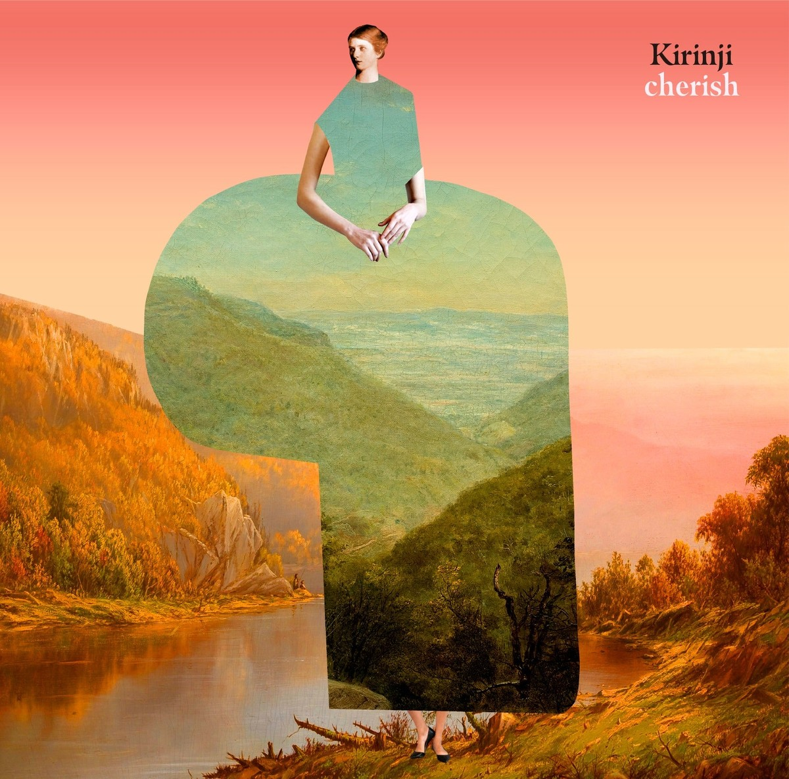

"Frank Ocean is a 23-year-old New Orleans-born, Beverly Hills-based singer who was a part of the gleefully hedonistic hip-hop collective Odd Future Wolf Gang Kill Them All. Frank Ocean is also known as Christopher "Lonny" Breaux, a songwriter who has helped pen tracks for Justin Bieber, John Legend, and Brandy over the last few years. He's the latest example of why the major label system is crumbling at the knees of Twitter and Tumblr, too. After getting signed to Island Def Jam about a year ago, the label proceeded to ignore him. Until February 16, that is. That's when Ocean decided to give away his debut album, Nostalgia, Ultra, for free on his Tumblr." - PitchFork Magazine (2011)
Kirinji - Cherish

“Long-running project Kirinji has always had a little bit of pep in their step, even when they were mostly penning jolly indie-pop numbers in the 1990s that fit in well with the then-vibrant Shibuya-kei community without being tied down to it. They’ve undergone a lot of changes over the years, sonically and line up wise, but the latest album Cherish represents either a clean start for Kirinji or something resembling a pleasant mid-life crisis. This sees the group just totally indulge in their dance-pop fancies to the point of perfuming themselves in auto-tune on multiple songs or even getting downright (gulp) sexy on a few songs.” - OtaQuest (2019)
Hall & Oates - The Very Best Of
“If the Atlantic years were more adventurous, dabbling in folk and album rock, The Very Best of demonstrates the virtues of consistency, since these blue-eyed soul songs rank among the very finest singles (and songs) of their time. And Hall & Oates weren't unadventurous, either, since they deftly blended elements of new wave, contemporary soul, and soft rock into their signature sound.” - AllMusic (2020)
Kali Uchis - Sin Miedo (del Amor y Otros Demonios)
“The Los Angeles-based 26-year-old specialises in slow-jam hybrids of shimmering soul, lipgloss-sticky funk, sugary R&B and syrupy trap-pop with (you get the consistency) a Y2K hyperreal sheen.”
“Embracing her Colombian heritage with her first fully Spanish release – her name translates as Without Fear (of Love and Other Demons), plus, for the hell of of it, an infinity symbol – Uchis’s follow-up to her acclaimed 2018 breakthrough Isolation makes a superb bid for the Bond soundtrack with her belting cover of Cuban singer La Lupe’s Qué Te Pedí.” - The Guardian (2020)
Kendrick Lamar - To Pimp A Butterfly
“To Pimp a Butterfly isn’t just another album, and Kendrick Lamar isn’t just another rapper. Kendrick is different.”
“To Pimp a Butterfly is perfect. There’s no other adjective that can properly convey its greatness. To Pimp a Butterfly is an immaculate amalgamation of rap, jazz, funk, soul, and spoken word. It cannot be restricted by a single genre. It’s the latest evolution of Black Music, and it’s nothing short of genius. (Black Music, inhabited by the likes of Curtis Mayfield, James Brown, Prince, the Fugees, Andre 3000, and D’Angelo. A land where the natural barriers of music don’t exist. A place where the main goal is the advancement and protection of the culture.)” - The Verge (2015)